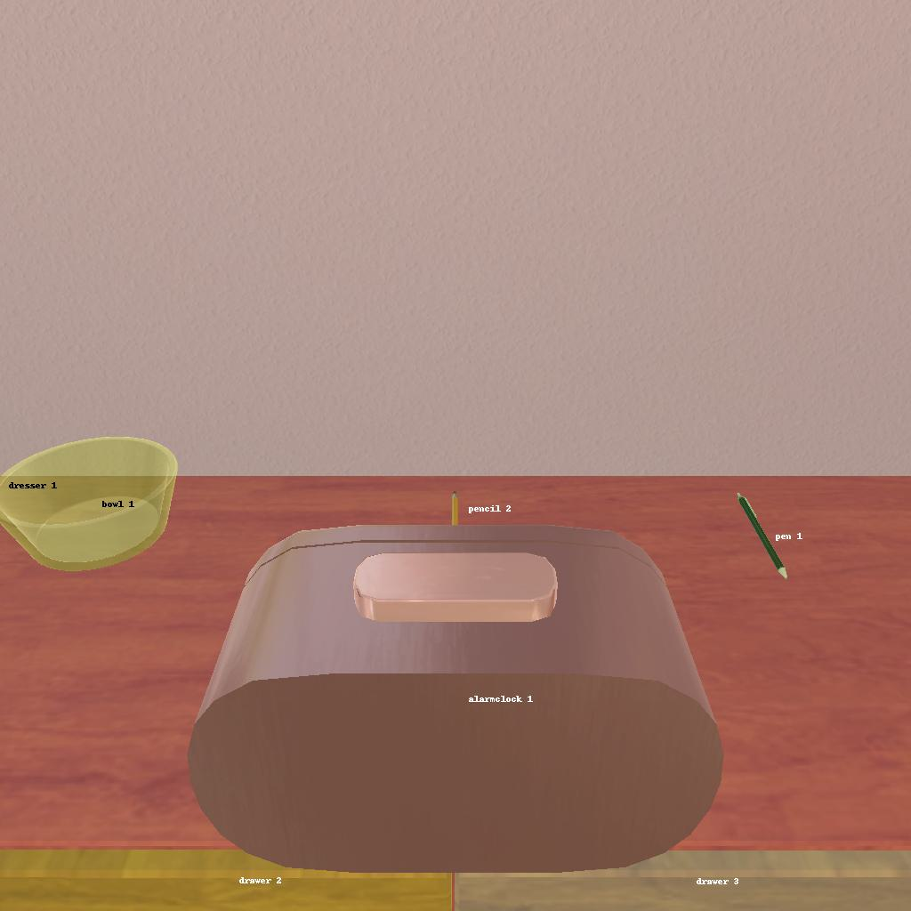

---------------------------------------------------------task: 0---------------------------------------------------------
--------------------------------------------------------------------------------------------------------------------------------------------------------------------
--------------------------------------------------------------------------------------------------------------------------------------------------------------------
Step:--------------------------------------------------------------------------10-------------------------------------------------------------------------------
----------------------------------------
VLM Prompt:
Image1:
Image2:
Image3:
**Instruction**
1. Analyze the provided image to identify all visible household objects, focusing on those relevant to the task description "examine the alarmclock with the desklamp."
2. Use the analysis of the image and the task hint "The agent must find an object of the desired type, locate and turn on a light source with the desired object in-hand." to answer the question: what is the most reasonable action in the choices for the task description "examine the alarmclock with the desklamp"?
4. Decide and write the answer using the template: The answer is: (i): , where i is the real number. If there is no desired object in the image, search every place based on **Initial Observation** to find the object. And if no one is exactly correct, choose a similar answer.
**Initial Observation**
You are in the middle of a room. Looking quickly around you, you can see bed (1), sidetable (1), drawer (1-11), dresser (1), safe (1), laundryhamper (1), garbagecan (1)
**Answer Choices**
(1): go to bed 1
(2): go to sidetable 1
(3): go to drawer 1
(4): go to drawer 3
(5): go to drawer 4
(6): go to drawer 5
(7): go to drawer 6
(8): go to drawer 7
(9): go to drawer 8
(10): go to drawer 9
(11): go to drawer 10
(12): go to drawer 11
(13): go to safe 1
(14): go to laundryhamper 1
(15): go to garbagecan 1
(16): open drawer 2
(17): close drawer 2
(18): put alarmclock 1 in/on drawer 2
(19): examine alarmclock 1
(20): examine drawer 2
**Answer**
Let's think step by step by following the instructions.
----------------------------------------
----------------------------------------
Original Response:
First, we identify the relevant objects to the task description. In the images, we can see an alarmclock labeled as "alarmclock 1." There is no desklamp visible in any of the images, so we must consider the initial observation to determine where to find the desklamp.
The task description states "examine the alarmclock with the desklamp," which means we need to find the desklamp to examine the alarmclock properly. The hint suggests that we must find the object (desklamp) and turn on a light source with the desired object (alarmclock) in-hand.
Based on the initial observation, the desklamp could be on the sidetable, dresser, or within one of the drawers since these are common places where a desklamp might be placed or stored.
However, we do not have any specific action that states "find desklamp" or similar. The closest action we can take to progress with the task is to open drawer 2 (16), as it is slightly ajar in the images, which might indicate that the desklamp is inside drawer 2 and needs to be turned on.
The answer is: (16): open drawer 2
----------------------------------------
----------------------------------------
>>> Refine Original VLM Response and Get Pure Action: open drawer 2
----------------------------------------
-----------------------------------------------------------------
Running time: 12.459748268127441 seconds
Total Money: 0.36563
-----------------------------------------------------------------
-----------------------------------------------------------------
Text Observation:You open the drawer 2. The drawer 2 is open. In it, you see a bowl 1, a keychain 1, a pen 1, and a pencil 2.
-----------------------------------------------------------------
UNSUCCEED